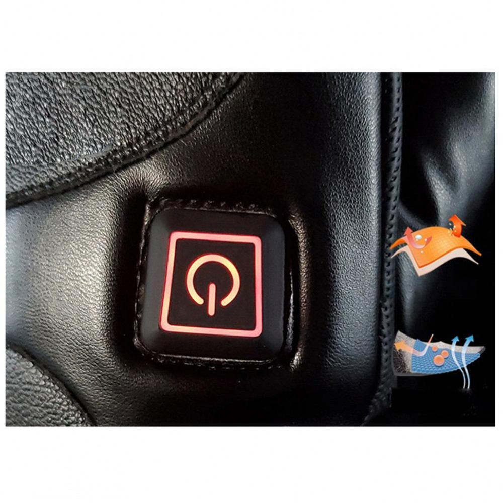

ELEKTRONINĖS KNYGOS | Baltos lankos Abi šios situacijos gali pakenkti jūsų prekės ženklui. Tačiau gera žinia ta, kad tai galite ištaisyti pateikdami pakankamai informacijos apie produktą. Taip pat vienas iš siūlymų būtų įtraukti DUK skiltį į visus svarbius jūsų produktų ar paslaugų puslapius. Tai ne tik padeda SEO, bet ir vartotojui :) 3.
Elektros ir elektroninės prekės - autokatalogas.eu Elektroninės prekybos taisyklės (toliau – Taisyklės) – šios El. parduotuvės prekių pirkimo-pardavimo taisyklės. 1.3. Pardavėjas – UAB Karcher, Įm. kodas: 302441879, PVM kodas: LT100004933311, adresas: Ukmergės g. 283, LT-06313, Vilnius, Tel.: +370 5 203 1690, el. paštas: info@lt.kaercher.com, įsteigta ir vykdanti veiklą pagal ...
Rezistoriai - Pasyviniai elektronikos komponentai ... Elektroninės svarstyklės greitai ir tiksliai nustatys Jūsų bagažo svorį ir padės užtikrinti sklandžias atostogų, darbo ar apsipirkimo užsienyje keliones! Elektronines svarstykles galėsite naudoti ir sveriant kitus daiktus, sveriančius nuo vos kelių gramų iki 40 kg – šis prietaisas itin pravers sode, buityje, žvejyboje ...
Elektroninės prekės - Elso Elektros ir elektroninės prekės (239 prekių) Satelitinių antenų sistemos; Saulės baterijų plokštės; Antenos, imtuvai
Elektroninės prekės Apsiperku.lt - Internetinė parduotuvė!Dirbame nuo 2015 metų ir kasdien džiūginame pirkėjus gerais pasiūlymais bei akcijomis. Mūsų parduotuvėje rasite įvairias namų ir sodo, grožio bei sveikatos, sporto ir laisvalaikio prekes, aksesuarus Jūsų automobiliams bei pradžiūginsite savo mažuosius!
Interneto svetainės bei elektroninės parduotuvės prekės ... Daugelis elektroninių skaityklių turi vieną iš dviejų ekrano tipų - E Ink arba SiPix. E Ink ekrano pranašumas - ideali teksto kokybė monitoriuje, pagerintas skaitymo greitis, ilgesnis baterijos darbo laikas, geras kontrastas skaitant lauke.
Elektroninės svarstyklės 50Kg - Baldai, sporto prekės ... Elektroninės Cigaretės Elektroninių cigarečių rinkiniai . Visoms eCigatėms taikoma kokybės garantija 3 mėnesiai (90 kalendorinių dienų) o Pradiniams rinkiniams 1mėn(31d.) nuo prekių įsigijimo dienos.
Elektroninės prekybos iššūkiai mažmeninės prekybos rinkai ... Švedijoje elektroninės prekybos rinkos dalis siekia apie 10 proc. ir šioje šalyje per pastaruosius šešerius metus beveik nė vienos prekybos šakos pelningumo norma neaugo. Vienintelė atsilaikiusi sritis – maisto prekės. JAV elektroninės prekybos dalis siekia 14 proc., o rezultatas – uždaromos parduotuvės ir liūdnos prognozės ...

Registruotis Slaptažodžio priminimas Pradžia Naujienos Akcijos Bendrosios taisyklės Kontaktai www.autokatalogas.eu Kemperių prekės Elektros ir elektroninės prekės
Prekių grupės
Auto ir kelionės reikmenys Automobilių atsarginės dalys Automobilių papildoma įranga Kemperių prekės Šildytuvai ir kondicionieriai Elektros ir elektroninės prekės Šviestuvai ir papildomas apšvietimas Salonas ir virtuvė Vandentiekio ir sanitarinė technika Chemijos prekės Išorinė įranga ir priedai Kita įranga ir priedai Priekabų priedai ir dalys Sunkvežimių atsarginės dalys Sunkvežimių papildoma įranga Laivybos prekės Akumuliatoriai ir baterijos Šviesos ir elektros reikmenys Auto-moto chemija Alyvos ir tepalai Dirbtuvių įranga ir reikmenys IŠPARDAVIMAS